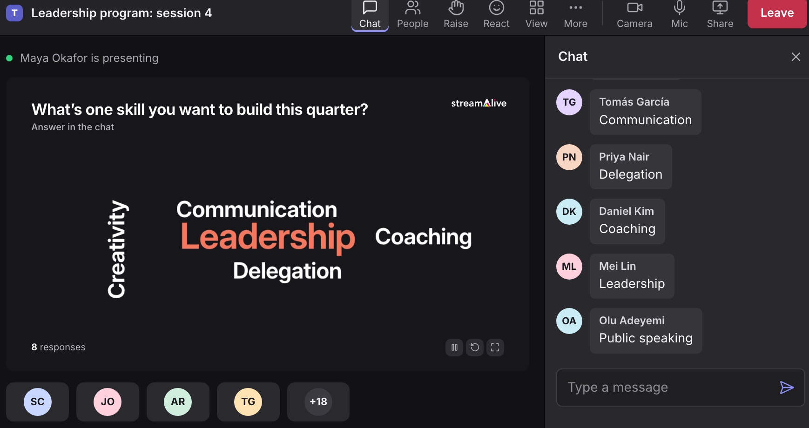

Zoom's top pick, three times over.
StreamAlive is the #1 featured Zoom AI app, the #1 featured Zoom education app and the #1 featured Zoom employee engagement app. It was Zoom's App of the Month in February 2025.
I'm the founder and CEO of StreamAlive, a TED speaker, the author of Name, Place, Animal, Thing, and a wannabee comedian. On every one of those stages I'm after the same thing: an audience that takes part instead of sitting through it.
I write about that, and about living and mining stories, in my newsletter.
01 · Story
My full name is Lakshmanan Narayan. Everyone calls me Lux.
I was born in Bombay and went to middle and high school in Dubai. My first teacher in presenting was my grandfather, who started the first public-speaking school in Madras (now Chennai) in the early 1970s.
I studied at IIT Madras, then did my MBA at IIM Calcutta, where I met Tina Lyngdoh, my wife and my co-founder.
From 1998 to 2005 I worked in advertising and media in Dubai, at Lintas and then Initiative Media, and taught at two Dubai universities during those years. In 2005 I moved to Chennai as part of the founding team at Vembu Technologies, a data backup software company. Later I founded Unmetric, a social media intelligence company, and moved to the US in 2013. Cision acquired Unmetric in late 2019.
In 2020 I wrote a book. To learn about publishing I took 6 paid courses across 56 livestreams. Every presenter either droned through slides, ignored the chat, or sent the audience to their phones. All the while, the chat was on fire.
That frustration became StreamAlive, which I founded in 2021 with Tina and with Joe Varghese, my classmate at both IIT and IIM.
I organize my life and work around three values: curiosity, humility and empathy.
I tell more stories like this in my newsletter. Sign up
02 · StreamAlive
StreamAlive makes presentations conversations.

It turns the chat in a live session into real-time visuals: polls, word clouds, maps and quizzes.
It runs on the chat people are already in. No QR code, no second app, no phone.
StreamAlive is the #1 featured Zoom AI app, the #1 featured Zoom education app and the #1 featured Zoom employee engagement app. It was Zoom's App of the Month in February 2025.
Svitlo School gives free online English lessons to more than 4,000 Ukrainian children whose education has been disrupted by war. In a 2026 pilot in its Zoom lessons, the share of children actively taking part rose from 66.9% to 93.1%.
Trainers, educators, online instructors and webinar hosts use it. If you present to groups, take a look.
03 · Talks & Book
Photo: Ryan Lash
The talk
A TED talk about what 2,000 obituaries taught me about how to live. It has been watched more than 2 million times. I won't spoil it here.
The book
Someone asks, "So, what do you do?" and you answer with a job title. Name, Place, Animal, Thing (2021) is a modern fable about giving a better answer than that. It is an Amazon bestseller.
The newsletter carries on from the book, with lessons from Name, Place, Animal, Thing and ways to mine your own stories. Sign up
I take speaking invitations. Message me on LinkedIn and tell me about your event. My talks live at the intersection of interactivity, humor, and actionable insights.
04 · StoryMining
Your best stories are already in your own life. StoryMining is the workshop where I teach founders and executives to dig them out and tell them well.
It is built on the Name, Place, Animal, Thing framework from my book, and it works in four steps:
I run StoryMining as a private workshop for companies.
The public workshop runs live on Zoom. It is interactive and runs on StreamAlive, so you take part rather than watch.
Details and prices are at storymining.life.
05 · Comedy
I have performed stand-up at the Comedy Cellar. "Wannabee" stays in my bio until further notice.
Here is my debut there.
Why does a software founder do this? Comedians make a room react, and evoking a visceral reaction is the most powerful form of communication. It is the same thing I ask presenters to do.
I'm now running an experiment in room-work comedy. Stay tuned.
News on the experiment will go out in my newsletter. Sign up
06 · Newsletter
This is my personal newsletter, on Substack. Subscribers get: